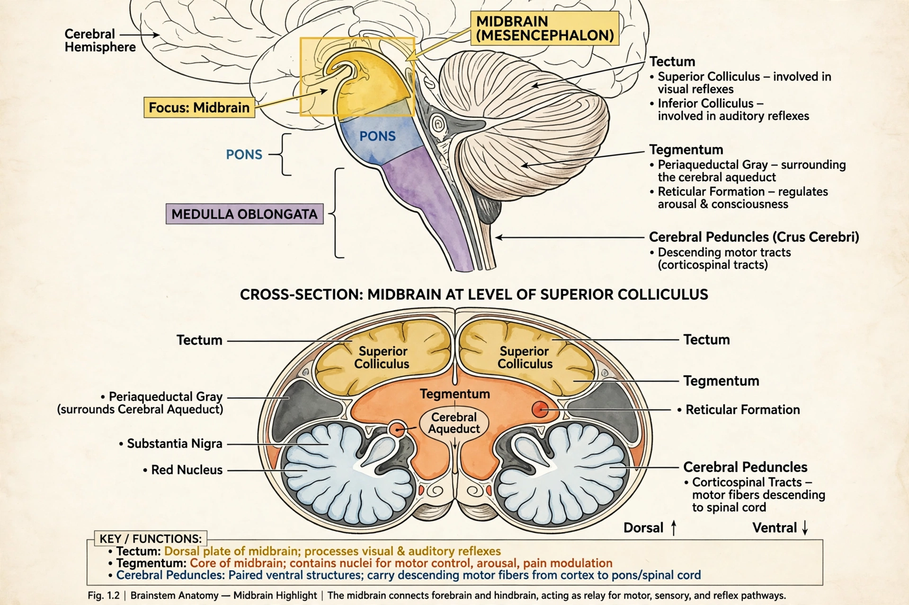

| Midbrain | |
|---|---|
 | |
| Part of | Brainstem |
| Components | Tectum, tegmentum, cerebral peduncles |
| Artery | Posterior cerebral, superior cerebellar, basilar |
| Vein | Basal, great cerebral |
| Identifiers | MeSH D008636; NeuroNames 445 |
The midbrain or mesencephalon is the rostral-most portion of the brainstem connecting the brain to the spinal cord. It is the smallest region of the brain, acting as a relay station for auditory and visual information and controlling many important functions including eye movements, motor coordination, and arousal.
The midbrain is divided into three main parts: the tectum (or dorsal portion), the tegmentum, and the cerebral peduncles (ventral portion). The tectum contains the corpora quadrigemina, made up of the superior colliculi (involved in vision) and inferior colliculi (involved in audition). The substantia nigra, a structure rich in dopaminergic neurons, lies within the midbrain and is closely associated with the basal ganglia; its degeneration is a hallmark of Parkinson's disease.
The cerebral aqueduct (aqueduct of Sylvius) runs through the midbrain, connecting the third and fourth ventricles and carrying cerebrospinal fluid. Cranial nerves III (oculomotor) and IV (trochlear) emerge from the midbrain.
The midbrain serves important functions in motor movement, particularly movements of the eye, and in auditory and visual processing. The red nucleus and substantia nigra participate in motor control. The reticular formation, which extends through the midbrain, plays a role in arousal and consciousness. The periaqueductal gray is involved in pain modulation and defensive behaviour.
During embryonic development, the midbrain arises from the mesencephalon, the middle of the three primary brain vesicles. Unlike the hindbrain and forebrain, it does not subdivide further during development.
Lesions of the midbrain can cause a variety of syndromes, including Weber's syndrome, Benedikt's syndrome, and Parinaud's syndrome (dorsal midbrain syndrome), characterised by paralysis of upward gaze. Obstruction of the cerebral aqueduct can lead to hydrocephalus.
See also: Pons; Medulla oblongata; Diencephalon; Cranial nerves.